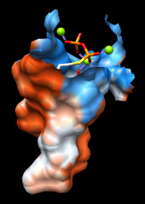
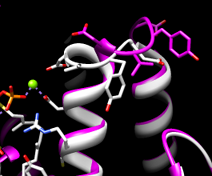

- Side View (under Viewing Controls)
- FindHBond (Structure Analysis)
- Find Clashes/Contacts (Structure Analysis)
- Rotamers (Structure Editing)
- Reply Log (Utilities, the last section)


This tutorial includes binding site analysis and comparison of related structures by superposition and morphing. Internet connectivity is required to fetch the structures 2zcp and 2zco.
The pathogenic organism Staphylococcus aureus makes a pigment called staphyloxanthin. The pigment imparts a golden color (hence aureus), but more importantly, contributes to virulence by protecting the bacteria from killing by the host immune system. The S. aureus enzyme CrtM may be a good drug target because it catalyzes a key step in staphyloxanthin synthesis:
A cholesterol biosynthesis inhibitor blocks Staphylococcus aureus virulence. Liu CI, Liu GY, Song Y, Yin F, Hensler ME, Jeng WY, Nizet V, Wang AH, Oldfield E. Science. 2008 Mar 7;319(5868):1391-4.We will view and compare different structures of this enzyme.
On Windows/Mac, click the chimera icon; on UNIX, start Chimera from the system prompt:
unix: chimeraA basic Chimera window should appear after a few seconds; resize it as desired. Open the Command Line (Tools... General Controls... Command Line).
Choose Favorites... Add to Favorites/Toolbar to place some icons on the toolbar. This opens the Preferences, set to Category: Tools. In the On Toolbar column, check the boxes for:
|
|
|
|
|
|
Fetch a structure from the Protein Data Bank and use the ribbons preset:
Command: open 2zcp
Menu: Presets... Interactive 1 (ribbons)
| 2zcp active site |
|---|
 |
Command: delete :.bMove and scale structures using the mouse and Side View as desired throughout the tutorial. The front and back clipping planes can be adjusted in the Side View.
Command: focus
The enzyme combines two 15-carbon molecules of farnesyl pyrophosphate to form a 30-carbon lipid. This structure contains farnesyl thiopyrophosphate, which differs from the substrate by having a sulfur in the place of one oxygen. Sulfur atoms are yellow, phosphorus orange, oxygen red, and nitrogen blue. Label the ligand residues:
Command: rlabel ligandIn this structure, the farnesyl thiopyrophosphate molecules are named FPS and are residues 657 and 658 of chain A. Three metal ions help to offset the negative charges on the phosphates. These are shown as greenish spheres; hovering the mouse cursor over each reveals (assuming default balloon preferences) that they are Mg ions. Metal coordination bonds from FPS, water, and the protein are shown with dashed purple lines. Lines drawn to indicate interactions other than covalent bonds are called pseudobonds. Hovering the cursor over a pseudobond or bond shows balloon information about its end atoms and length.
Delete the water and label residues with displayed atoms:
Command: del solventWater could be included in the various analyses, but is removed here to simplify the tutorial.
Command: rlab @/display
It looks like several sidechains could be donating hydrogen bonds to ligand phosphate oxygens. (Although the structure does not include hydrogens, we know they are there!)
One of the displayed residues is Ser 21. To measure a distance:
The distances seem consistent with hydrogen bonds. However, rather than measuring many distances and trying to remember the appropriate hydrogen-bonding distances for different types of atoms, just use FindHBond. We will limit the search to H-bonds involving the FPS residues:
Command: ~hbondFind Clashes/Contacts has some similarities to FindHBond, but it can also identify nonpolar interactions:
Even though all of the contacting atoms have been selected, not all of them are displayed. Click into the graphics window, press the keyboard up arrow key to promote the selection from atoms to whole residues, and then display the selection (Actions... Atoms/Bonds... show).
One might simply want a list of the interacting residues rather than the details of each atomic contact. A list of the selected residues can be saved. First, deselect the ligand residues and ions, leaving the protein residues selected:
Command: ~sel ligand | ionsOpen the Selection Inspector by choosing Actions... Inspect from the menu or by clicking the magnifying glass icon
 near the bottom right corner of the main window.
It reports that 26 residues are selected.
Click its Write List... button or
choose Actions... Write List from the main menu.
In the resulting dialog, indicate that selected residues
should be written. Click Log to write the list to the
Reply Log instead of to a file.
near the bottom right corner of the main window.
It reports that 26 residues are selected.
Click its Write List... button or
choose Actions... Write List from the main menu.
In the resulting dialog, indicate that selected residues
should be written. Click Log to write the list to the
Reply Log instead of to a file.
Amino acid torsion angle values can be viewed in the Selection Inspector. Focus on Tyr 248:
Command: focus :248Ctrl-click to pick any atom or bond in Tyr 248. This will replace (clear) any pre-existing selection. Open the Selection Inspector again if it is not already open. Inspecting Residue (instead of Atom) shows that the sidechain angles chi1 and chi2 in this residue are approximately –107° and –142°, respectively. The phi and psi backbone angles are also given. When multiple residues with different angle values are selected, the dialog will report ranges.
| clash checking |
|---|
 |
We will set up clash checking and rotate the sidechain interactively.
Command: disp :248 z<4
Use whichever method you prefer to rotate the bond. As the sidechain moves, yellow pseudobonds show any clashes and the distance monitor updates automatically. The sidechain is fairly constrained; only chi1 angles of approximately –(100-120)° avoid clashes if only that bond is rotated. The sidechain can be frozen in a new position, but for tutorial purposes, simply restore it to its original position: in the Adjust Torsions dialog, click the entry under Bond to show a menu. In that menu, choose Revert (move back to original position) and then Deactivate (make the bond no longer rotatable). Close the torsion dialog.
Click the Find Clashes/Contacts icon to bring the dialog to the front and Close it to halt clash checking.
Next, we will compare the conformation of Tyr 248 in the structure to tyrosine rotamers from a library. This will indicate whether the sidechain is in a frequently observed conformation and whether other conformations might also fit into the structure.
With part of Tyr 248 still selected (if not, Ctrl-click to to select any of its atoms or bonds), start Rotamers by clicking its icon. Click OK to show TYR rotamers from the Dunbrack backbone-dependent library. The rotamers are shown in the wire representation and listed in another dialog.
Clicking a line in the rotamer dialog displays just that rotamer. Clicking the lines one by one shows that none of the rotamers match the conformation in the structure.
The rotamer dialog reports chi1 and chi2 angles and probabilities from the library based on the residue's backbone conformation. Other than the backbone angles, the probabilities do not take into account any interactions specific to this structure. However, the rotamer dialog is integrated with clash and H-bond detection. Choose Columns... Add... Clashes and click OK to use the default settings; repeat with Columns... Add... H-Bonds.
The new columns show that each rotamer forms several clashes but no hydrogen bonds. We showed above that Tyr 248 H-bonds with the ligand and avoids clashes, which may compensate for its nonrotameric (presumably strained) conformation.
A sidechain can be replaced with a chosen rotamer. With a single rotamer shown, either click OK in the rotamer dialog to replace the sidechain with that rotamer and remove the others, or simply Close the dialog to remove the rotamers without replacing the sidechain. Although not done in this case, rotamers can be shown for a different amino acid type than in the structure, allowing for virtual mutations.
Unlike Tyr 248, Tyr 41 closely resembles the highest-probability tyrosine rotamer given its backbone angles. If you like, focus on Tyr 41, select one of its atoms or bonds, and use Rotamers to show and evaluate rotamers of tyrosine or some other amino acid at that position.
Remove the distance pseudobonds, unlabel the residues, clear the selection, and zoom back out:
Command: ~dist
Command: ~rlab
Command: ~sel
Command: focus
FPS and the natural substrate both have a highly polar/charged "head" and a long hydrocarbon tail. The enzyme pocket is very large and deep, as needed to accommodate two of these molecules.
A surface representation is best for showing the shape of the pocket. First, choose Favorites... Preferences from the menu, change to Category: New Surfaces, and set show disjoint surfaces to false. This will make the surface simpler by ignoring small enclosed pockets inside the protein. Close the preferences.
| 2zcp pocket surface |
|---|
|  |
Choose Presets... Interactive 3 (hydrophobicity surface) from the menu to display a molecular surface color-coded by amino acid hydrophobicity. This preset colors the surface ranging from dodger blue for the most polar residues to white to orange red for the most hydrophobic residues.
As one might expect, the mouth of the pocket near the phosphates and ions is mostly polar, while the rest of the pocket is largely hydrophobic. However, the pocket is so deep that it is hard to see when the whole surface is shown. Restricting the surface display to the pocket region allows it to be viewed from the outside, as shown in the figure.
Hide the surface, the ribbon, and the protein atoms:
Command: ~surfSurface display can be limited to a zone in a couple of different ways:
Command: ~ribbon
Command: ~disp protein
Command: surf protein & ligand za<6.5A fairly large cutoff is needed to avoid holes in the pocket surface. Apparently, this pocket includes some "wiggle room."
Command: surf proteinStart Surface Zone (under Tools... Surface/Binding Analysis) and click the Zone button. This tool measures distances to surface vertices, and it allows the cutoff to be adjusted interactively with a slider. The figure shows results for a cutoff of 4.7 Å. If you use this method, clear the selection afterward by Ctrl-clicking in an empty area of the graphics window.
Command: sel ligand
The Render by Attribute tool shows attribute values with colors and other visual cues. Choose Tools... Depiction... Render by Attribute from the menu to start this tool. The dialog is set to atoms when it appears. Choose bfactor from the attribute menu. The B-factor values are shown in a histogram, and the vertical bars on the histogram define a color mapping. These bars or thresholds can be added, deleted, moved, and/or their colors changed. Clicking the square color well allows changing the color of the threshold that was most recently clicked or moved. If any sidechain was replaced with a rotamer, the new atoms will not have B-factor values, but they can be assigned a No-value color. Adjust the color mapping as desired, then Apply it to the structure. The lowest B-factors are in the protein core, the highest in a loop over the active site and the C-terminus on the opposite side.
In the Render dialog, switch from atoms to residues and show the histogram for the attribute kdHydrophobicity, the Kyte-Doolittle hydrophobicity. This is the same attribute used by the surface preset, but this tool allows different color schemes to be applied. Higher numbers correspond to more hydrophobic (less polar) amino acids. The No-value color pertains to residues without Kyte-Doolittle hydrophobicity values, namely any that are not amino acids. Apply coloring by hydrophobicity if you like, then Close the dialog.
Comparing different structures of a protein is another way to evaluate flexibility. We have been viewing a structure bound to substrate analogs, 2zcp. A structure of the same enzyme without ligands is also available.
Fetch the "empty" structure and apply the ribbons preset:
Command: open 2zcoNow the first structure is white and the new structure is magenta, as shown in the Model Panel (Tools... General Controls... Model Panel).
Command: preset apply int 1
The structures are in completely different positions, so the next step is to superimpose them. This is easily accomplished with MatchMaker or its command equivalent:
Command: mm #0 #1MatchMaker generates a sequence alignment using residue types and secondary structure (tries to align helix with helix and strand with strand) and then fits CA-CA pairs in the same columns of the sequence alignment. By default, it iterates the fit so that far-apart pairs are not included in the final match. Match statistics are reported in the Reply Log. The sequence alignment is not shown by default, but can be displayed by adding show true to the above command.
Alternatively, the following produces exactly the same superposition:
Command: match iterate 2.0 #1@ca #0@ca
| different loop conformations |
|---|
|  |
Either way, iteration is recommended so that similar parts will superimpose well and dissimilar parts will stand out better. These two structures are very similar except for the loop at approximately residues 51-56 (you can see residue numbers by hovering the cursor over the ribbon):
Command: disp :51-56Morphing involves calculating a series of intermediate, interpolated structures between the original input structures. In Chimera, the series of structures is treated as a trajectory that can be replayed, saved to a coordinate file, or saved as a movie using MD Movie.
Start the morphing tool:
Command: start Morph ConformationsClick Add... and in the resulting list of models, doubleclick to choose #0, #1, and #0 again, corresponding to a morph trajectory from the ligand-bound structure to the empty structure and back. Close the model list. In the main Morph Conformations dialog, set the Action on Create to hide Conformations, and then click Create.
The progress of the calculation is reported in the status line. When all the intermediate structures have been calculated, the input structures are hidden, the trajectory is opened as a third model (#2), and the MD Movie tool appears. The trajectory can be played continuously or one step at a time by clicking buttons on the tool, or a frame number can be entered directly.
The initial display style of the trajectory and which atoms are shown/hidden mimic the input structures, but in fact all atoms that are present in both input structures are also present in the trajectory. The coloring and display can be controlled just as in any other structure. For example, to show only aromatic amino acids along with the ribbon:
Command: show #2 & aromaticLigand residues were only present in one of the structures, so they are not included in the morph trajectory. However, part or all of the original structures can be displayed along with the trajectory. Display of the other models can be re-enabled by checking the S(hown) boxes in the Model Panel (Tools... General Controls... Model Panel) or with a command, for example:
Command: modeldisp #0Then, to show only the ligand residues in that model:
Command: ~ribbon #0In this case, the secondary structure does not change much between the input structures. When conformational differences are larger and ribbons will be displayed, one may want to re-evaluate the secondary structure at each step of the trajectory. That can be done by putting the command ksdssp in a per-frame Chimera script in MD Movie.
Command: ~disp #0
Command: disp :fps
The Morph Conformations page lists a few additional example systems.
When finished enjoying the morph trajectory, choose File... Quit from the menu to exit from Chimera.